청소년상담사-1급(2교시)(구) (2014-03-29 기출문제)
1과목: 비행상담
1. 소년법상 소년부의 보호사건으로 심리하는 대상이 아닌 자는?
- 죄를 범한 만 10세 소년
- 형벌 법령에 저촉되는 행위를 한 만 13세 소녀
- 정당한 이유 없이 가출을 했고 형벌 법령에 저촉되는 행위를 할 우려가 있는 만 16세 소녀
- 술을 마셨으며 형벌 법령에 저촉되는 행위를 할 우려가 있는 만 19세 소년
- 죄를 범한 만 15세 소녀
(정답률: 알수없음)

2. 청소년 폭력비행의 특징으로 옳은 것은?
- 충동적으로 일어나는 경우보다 보복성인 경우가 늘어나는 추세다.
- 폭력행동이 일반청소년보다는 비행청소년에게만 발견되고 있어 하위집단화되는 경향이 있다.
- 집단 따돌림이나 심부름 시키기 등 심리적 폭력보다는 일반적인 폭력행사나 금품갈취가 늘어나는 추세다.
- 남학생보다 여학생의 폭력비행 증가율이 크다.
- 지속적인 학대적 폭력보다는 일회성 단순폭력이 더 문제가 되고 있다.
(정답률: 알수없음)
3. 지위비행에 해당하지 않는 것은?
- 무단결석
- 폭행
- 가출
- 음주
- 음란물 접촉
(정답률: 알수없음)
4. 보호처분에 관한 설명으로 옳지 않은 것은?
- 1호 처분: 보호자에게 감호 위탁
- 3호 처분: 사회봉사명령
- 7호 처분: 병원 위탁
- 8호 처분: 1개월 이내의 소년원 송치
- 10호 처분: 소년교도소 송치
(정답률: 알수없음)
5. 변화의지가 없으며 상담에 비협조적인 비행청소년을 상담할 때 상담자의 전략으로 옳지 않은 것은?
- 현재 상황을 직면시켜 상담에 협조하도록 촉구한다.
- 예외적인 상황을 탐색하여 실행가능한 부분을 찾는다.
- 긍정적인 측면을 탐색하고 이를 강화하려고 노력한다.
- 작지만 변화가능성이 있는 부분에 초점을 맞추어 상담을 진행한다.
- 마음을 열 수 있는 다양한 활동기회를 제공한다.
(정답률: 알수없음)
6. 비행청소년이 행동화(acting out)할 가능성이 가장 높은 MMPI 프로파일은?
- Sc, Si가 높은 경우
- Mf가 높고 D가 낮은 경우
- Hy가 높고 D, Si가 낮은 경우
- Hy, D가 높고 Ma가 높은 경우
- Pd, Ma가 높은 경우
(정답률: 알수없음)
7. 비행청소년 심리평가 시 사용할 수 있는 투사적 검사는?
- MBTI
- TAT
- PAI
- BDI
- MMPI
(정답률: 알수없음)
8. 헤어(Hare)이론에 관한 설명으로 옳은 것을 모두 고른 것은?
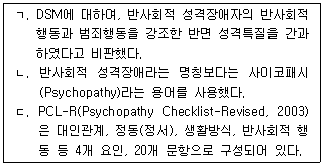
- ㄴ
- ㄱ, ㄴ
- ㄱ, ㄷ
- ㄴ, ㄷ
- ㄱ, ㄴ, ㄷ
(정답률: 알수없음)
9. 비행청소년의 상담을 위한 평가내용으로 옳지 않은 것은?
- 비행행동의 동기와 유형 탐색
- 반복적인 비행인지 일시적인 비행인지 파악
- 범죄전력, 비행또래관계, 가족구조 탐색
- 비행행동을 법률적인 관점에서 처벌 결정
- 다양한 검사로 비행청소년의 특성 파악
(정답률: 알수없음)
10. 청소년비행에 관한 설명으로 옳은 것은?
- 사이버범죄율 급속히 증가
- 형법범과 같은 강력범죄율 감소
- 초등학교 졸업 이하의 저학력 범죄자 증가
- 재범자 비율 감소
- 전체 범죄 중에서 청소년 범죄 감소
(정답률: 알수없음)
11. 위험성 평가와 관련된 용어에 관한 설명으로 옳은 것을 모두 고른 것은?
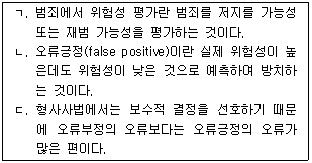
- ㄷ
- ㄱ, ㄴ
- ㄱ, ㄷ
- ㄴ, ㄷ
- ㄱ, ㄴ, ㄷ
(정답률: 알수없음)
12. 비행청소년의 부모상담시 상담자 태도로 옳은 것은?
- 부모와 자녀의 입장이 다를 경우 신중하게 판단하여 한 가지 입장을 지지한다.
- 양육방식이 비행청소년에게 미치는 영향에 대하여 부모가 이해하도록 돕는다.
- 상담내용에 대해 보호자인 부모에게는 비밀보장의 의무를 지킬 필요가 없다.
- 비행청소년의 부모가 경험하는 고통과 어려움에 대한 공감보다는 교육에 초점을 둔다.
- 비행청소년과 합의하지 못하더라도 부모가 원하는 것을 청소년의 상담목표로 정한다.
(정답률: 알수없음)
13. 비자발적인 완득이를 처음 상담할 때 상담자의 태도로 옳은 것을 모두 고른 것은?
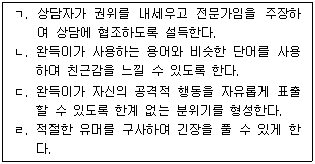
- ㄱ, ㄹ
- ㄴ, ㄷ
- ㄴ, ㄹ
- ㄴ, ㄷ, ㄹ
- ㄱ, ㄴ, ㄷ, ㄹ
(정답률: 알수없음)
14. 청소년 비행예방을 위한 지역사회 기반 프로그램의 예로 옳은 것은?
- 협동적 학습전략, 상호작용방식의 수업으로 구성된 시애틀 사회발전 프로젝트
- 빈곤하고 해체된 지역을 중심으로 지역내 조직화를 통해 청소년 여가활동을 늘린 시카고 프로젝트
- 특별관리, 학업증진 도모, 학생상담으로 구성된 학교 환경 프로젝트
- 교내 비행청소년을 위한 학교 내 인지행동치료 집단
- 문제청소년 부모를 대상으로 자녀양육방법을 지도한 오레곤 사회학습센터 프로그램
(정답률: 알수없음)
15. 사이버시대가 청소년 성범죄에 미치는 영향으로 옳은 것을 모두 고른 것은?
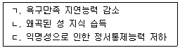
- ㄴ
- ㄱ, ㄴ
- ㄱ, ㄷ
- ㄴ, ㄷ
- ㄱ, ㄴ, ㄷ
(정답률: 알수없음)
16. 학교폭력 가해자의 성격적 특성으로 옳지 않은 것은?
- 우월감을 추구하다가 좌절될 때 공격성을 표출한다.
- 다른 사람들에 비해 분노를 더 자주 느낀다.
- 주변 친구들의 폭력행동을 모방한다.
- 일종의 방어기제로 공격적 행동을 한다.
- 모든 가해자는 폭력행동에 대한 죄책감을 느낀다.
(정답률: 알수없음)
17. 인터넷 중독에 관한 설명으로 옳은 것을 모두 고른 것은?
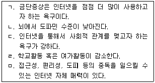
- ㄱ, ㄴ
- ㄱ, ㄷ
- ㄷ, ㄹ
- ㄷ, ㄹ, ㅁ
- ㄴ, ㄷ, ㄹ, ㅁ
(정답률: 알수없음)
18. 청소년 재산비행에 관한 설명으로 옳은 것을 모두 고른 것은?
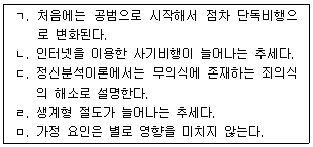
- ㄱ, ㄴ
- ㄴ, ㄷ
- ㄱ, ㄴ, ㄷ
- ㄴ, ㄷ, ㅁ
- ㄷ, ㄹ, ㅁ
(정답률: 알수없음)
19. 애그뉴(Agnew)의 일반긴장이론에서 비행의 원인으로 옳은 것은?
- 주위 사람들로부터 법위반에 대한 호의적인 가치나 태도를 학습한다.
- 목표달성의 실패, 긍정적 자극의 소멸, 부정적 자극의 발생 등에 의해 나타난다.
- 하층청소년들에게는 성공에 이르는 기회가 차단되어 있기 때문에 비행이 나타난다.
- 하층청소년들은 자신이 속한 하층문화의 가치와 신념에 따라 행동하기 때문에 비행이 나타난다.
- 배출요인, 외적유인요인, 압력요인 등에 의해 나타난다.
(정답률: 알수없음)
20. 청소년 비행에 관한 억제이론의 설명으로 옳은 것은?
- 사회와의 유대, 비공식적 통제를 강조
- 유대가 약한 지역에서 비행이 많이 발생한다고 주장
- 처벌을 약화시키는 것을 강조
- 도심에서 멀어질수록 비행률이 낮아진다고 주장
- 처벌의 신속성, 확실성, 엄격성의 효과에 주목
(정답률: 알수없음)
21. 학교폭력 예방 및 대책에 관한 법률의 용어 설명으로 옳지 않은 것은?
- 따돌림: 학교 내외에서 2명 이상의 학생들이 특정 학생을 대상으로 지속적으로 신체적 또는 심리적 공격을 가하여 상대방이 고통을 느끼도록 하는 행위
- 가해학생: 가해자 중에서 학교폭력을 행사하거나 그 행위에 가담한 학생
- 피해학생: 학교폭력으로 인해 피해를 입은 학생
- 사이버 따돌림: 스마트폰을 사용하지 않는 학생을 무시하거나 공격하면서 특정 그룹에서 소외시키는 행위
- 학교폭력: 학교 내외에서 학생을 대상으로 발생한 상해, 폭행, 공갈, 성폭력 등에 의해 신체ㆍ정신 또는 재산상의 피해를 수반하는 행위
(정답률: 알수없음)
22. 다음은 무엇에 관한 설명인가?
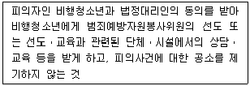
- 소환 및 동행영장
- 임시조치
- 심리불개시
- 조건부 기소유예
- 조사명령
(정답률: 알수없음)
23. 허쉬(Hirschi)의 사회유대이론의 개념에 관한 설명으로 옳지 않은 것은?
- 관여(commitment): 사회에서의 일에 얼마나 관심을 가지는가
- 신념(belief): 인습적 가치를 받아들이고 있는가
- 참여(involvement): 부모와 대화를 자주 하는가
- 신념(belief): 법을 위반하면 안 된다고 생각하는가
- 참여(involvement): 인습적인 활동에 얼마나 많은 시간을 할애하는가
(정답률: 알수없음)
24. 안나 프로이트(Anna Freud)의 방어이론에서 설명하는 청소년기에 관한 설명으로 옳은 것은?
- 금욕주의와 주지화를 통해 성적 긴장을 해소한다.
- 개인적 우화와 같은 자아중심성이 나타난다.
- 오이디푸스 콤플렉스가 나타나는 시기다.
- 인습적 수준의 도덕적 사고를 하게 된다.
- 미시체계, 중간체계, 외체계, 거시체계의 영향을 받는다.
(정답률: 알수없음)
25. 비행에 관한 낙인이론의 설명으로 옳지 않은 것은?
- 사회 내에서의 처우를 강조하는 탈시설화를 주장했다.
- 여성이 남성보다 더 엄중히 처벌받는다고 하여 여성의 불리함을 주장했다.
- 누가 비행을 하는가보다 누가 비행자로 지목되는가에 주목했다.
- 비행아로 낙인찍힌 아이가 나중에 범죄자가 될 수 있다고 주장했다.
- 가벼운 비행은 일탈로 규정짓지 말자는 비범죄화를 주장했다.
(정답률: 알수없음)
26. 공격성이 높은 청소년들에게 나타날 수 있는 신경생리학적 특징에 관한 설명으로 옳은 것은?
- 낮은 세로토닌 수준
- 낮은 노르에피네프린 수준
- 낮은 코르티솔 수준
- 변연계의 비활성화
- 전두엽 피질 영역의 활성화
(정답률: 알수없음)
27. 소년법상 비행청소년의 심판에 관한 설명으로 옳지 않은 것은?
- 법원은 소년에 대한 형사사건에 관하여 필요한 사항을 조사하도록 조사관에게 위촉할 수 있다.
- 소년에 대한 형사사건의 심리는 친절하고 온화하게 하여야 한다.
- 소년에 대한 형사사건의 심리는 다른 피의사건과 관련된 경우에는 그 피의사건과 심리 절차를 함께 진행해야 한다.
- 죄를 범할 당시 18세 미만인 소년에 대하여 사형으로 처할 경우에는 15년의 유기징역으로 한다.
- 징역을 선고받고 특별히 설치된 교도소에서 형을 집행하던 소년이 집행 중 23세가 되면 일반 교도소에서 형을 집행할 수 있다.
(정답률: 알수없음)
28. 마치(Matza)와 사이크스(Sykes)의 중화기술에 관한 설명으로 옳은 것을 모두 고른 것은?
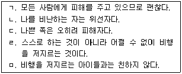
- ㄱ, ㄴ, ㄷ
- ㄱ, ㄴ, ㅁ
- ㄴ, ㄷ, ㄹ
- ㄴ, ㄹ, ㅁ
- ㄷ, ㄹ, ㅁ
(정답률: 알수없음)
29. 삶에 대한 불안, 존재의 두려움이 비행을 일으킨다고 설명한 이론은?
- 실존주의이론
- 학습이론
- 정신분석이론
- 자아실현이론
- 인간중심이론
(정답률: 알수없음)
30. '학교폭력 없는 행복한 학교'를 위한 정부의 정책에 해당하는 것을 모두 고른 것은?
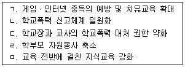
- ㄴ
- ㄱ, ㄴ
- ㄱ, ㄷ, ㅁ
- ㄴ, ㄷ, ㄹ
- ㄷ, ㄹ, ㅁ
(정답률: 알수없음)
2과목: 성상담
31. 성 역할에 관한 설명으로 옳지 않은 것은?
- 성격 특성은 성별과 직접적인 관련이 없다.
- 성 고정관념이란 성과 관련하여 남녀의 행동을 미리 가정하는 것이다.
- 사회화 과정에서 다양한 경로로 성역할을 습득한다.
- 전통적인 성 역할 개념에 대한 대안이 필요하다.
- 아니마와 아니무스의 분리가 필요하다.
(정답률: 알수없음)
32. 다음은 어떤 상담기법에 관한 설명인가?
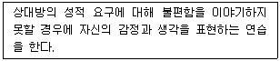
- 자기주장훈련
- 척도질문
- 인지 재구조화
- 체계적 둔감화
- 부적 강화
(정답률: 알수없음)
33. 피임기구를 이용한 피임법을 모두 고른 것은?
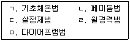
- ㄱ, ㄴ
- ㄴ, ㅁ
- ㄱ, ㄴ, ㄹ
- ㄴ, ㄷ, ㅁ
- ㄷ, ㄹ, ㅁ
(정답률: 알수없음)
34. 임신하면 태아가 자궁에 착상하도록 돕는 여성호르몬은?
- 프로게스테론
- 세로토닌
- 에스트로겐
- 옥시토신
- 바소프레신
(정답률: 알수없음)
35. 매독에 관한 설명으로 옳은 것은?
- 증상은 성기에 국한되며 입에는 나타나지 않는다.
- 2차 시기에 통증이 없다면 완치될 수 있다.
- 잠복기는 며칠 동안으로 끝난다.
- 매독균 접촉 후 증상은 일반적으로 2∼3주 후에 나타난다.
- 태아는 매독균에 감염되지 않는다.
(정답률: 알수없음)
36. 남녀의 내ㆍ외부 성 기관의 연결로 옳지 않은 것은?
- 남성 외부: 귀두, 음낭
- 여성 외부: 음핵, 치구
- 남성 내부: 음경해면체, 바르톨린샘(Bartholin's gland)
- 여성 내부: 자궁, 질
- 남성 내부: 전립선, 쿠퍼샘(Cowper's gland)
(정답률: 알수없음)
37. 아동ㆍ청소년의 성보호에 관한 법률상 직무 중에 아동ㆍ청소년 대상 성범죄 발견 시 신고에 관한 사항으로 옳은 것은?
- 초ㆍ중등교육법상 학교의 장은 즉시 수사기관에 신고하여야 한다.
- 한부모가족지원법상 한부모가족복지시설 종사자는 친권자의 거부가 없는 한 수사기관에 신고할 수 있다.
- 청소년보호법상 청소년 보호ㆍ재활센터의 종사자는 특별한 사유가 없는 한 수사기관에 신고할 수 있다.
- 청소년복지지원법상 청소년상담복지센터의 종사자는 청소년의 명시적 반대가 있는 경우 수사기관에 신고할 수 없다.
- 학원의 설립ㆍ운영 및 과외교습에 관한 법률상 학원 종사자는 부모의 명시적 반대가 있는 경우 수사기관에 신고할 수 없다.
(정답률: 알수없음)
38. 성폭력 피해 청소년과의 상담을 종결할 때 고려해야 할 사항으로 옳지 않은 것은?
- 가해자에 대한 용서 정도
- 자존감 향상 여부
- 심리적 외상 해결 정도
- 슬픔의 해결 정도
- 긍정적 자기개념 향상 정도
(정답률: 알수없음)
39. 인터넷상 유해한 성 정보로부터 청소년을 보호하기 위한 조치로 옳지 않은 것은?
- 인간을 상품화하지 않는 성교육 실시
- 표현의 자유와 불법 음란물 유통행위를 구분하는 법적 인식 확대
- 음란물 차단용 소프트웨어 개발 및 보급
- 청소년 스스로의 자정운동 촉진
- 음란물 배포회사에 대한 ISP(Internet Service Provider) 확대
(정답률: 알수없음)
40. 청소년기의 바람직한 성 행동으로 옳지 않은 것은?
- 자신 있게 성 행위를 거부할 수 있다.
- 상대방이 원한다는 내 느낌을 믿고 성 행위를 한다.
- 청소년기 혼전임신이 미칠 영향에 대해 이해한다.
- 출산, 피임에 대한 정확한 지식을 습득한다.
- 자기 자신의 성 기관의 명칭과 기능을 기억한다.
(정답률: 알수없음)
41. 강간 피해 직후 내방한 내담자 상담에서 적절한 조치를 모두 고른 것은?
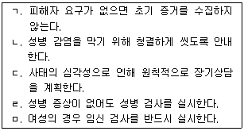
- ㄱ, ㄷ
- ㄴ, ㄷ
- ㄹ, ㅁ
- ㄱ, ㄷ, ㄹ
- ㄷ, ㄹ, ㅁ
(정답률: 알수없음)
42. 남녀의 성 반응에 관한 설명으로 옳지 않은 것은?
- 성기 자극이 아니라도 오감, 사고, 정서에 의해 성적으로 흥분할 수 있다.
- 여성 흥분반응에는 질액 분비가 포함된다.
- 음경이 길어야 여성이 더 만족한다는 것은 잘못된 지식이다.
- 마스터스와 존슨(Masters & Johnson)에 의하면 욕망-흥분-오르가슴의 3단계를 거친다.
- 대부분 사람들은 노골적이거나 감성적인 성적 환상을 경험한다.
(정답률: 알수없음)
43. 다음과 같은 청소년 내담자의 호소에 대한 상담자의 반응으로 옳지 않은 것은?
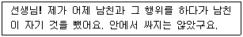
- '그 행위'가 무슨 행위인지 궁금하구나.
- 남자 친구와 성교를 했는데 질내사정을 하지 않았다는 거니?
- 성교 이후에 무엇이 걱정되니?
- 질외사정을 했다는 말이구나. 임신할 걱정은 없겠네.
- '그 행위'라고만 이야기하는데, 성교를 한 사실에 대해서 부담감을 느끼나보구나.
(정답률: 알수없음)
44. 사춘기 성 발달에 관한 설명으로 옳은 것은?
- 양쪽 고환이 고루 발달하여 높이가 비슷하게 된다.
- 질 입구에 처녀막이 형성된다.
- 2차 성징 발달 순서는 개인차가 심하다.
- 체중이 급격하게 줄면서 초경이 일어난다.
- 테스토스테론은 성욕에 영향을 준다.
(정답률: 알수없음)
45. 성폭력 상담자가 가져야 할 인식으로 옳은 것을 모두 고른 것은?
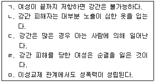
- ㄱ, ㄴ
- ㄴ, ㄷ
- ㄷ, ㅁ
- ㄹ, ㅁ
- ㄱ, ㄷ, ㅁ
(정답률: 알수없음)
46. 성역할 획득에 관한 각 이론의 설명으로 옳지 않은 것은?
- 성도식 이론: 남녀는 생물학적 특성에 맞는 성별 도식을 가지고 태어난다.
- 정신분석학적 이론: 남아는 오이디푸스 콤플렉스를 해결하기 위해 동성 부모를 동일시한다.
- 생물학적 이론: 성역할은 해부학적 특성으로 결정된다.
- 사회학습 이론: 타인, 소설ㆍ영화 주인공 등을 관찰하여 성역할 행동을 모방한다.
- 인지발달 이론: 성역할 개념은 인지발달을 기초로 발달한다.
(정답률: 알수없음)
47. 청소년 성교육 내용에 해당하지 않는 것은?
- 신체적 변화와 성욕구에 대한 이해와 자기 수용
- 위험 성행동에 대한 예방
- 청소년에게 적절한 피임방법에 대한 구체적 소개
- 금욕과 절제의 강조
- 생식기 위생관리 등 성건강 관리 요령
(정답률: 알수없음)
48. 성폭력 피해자 상담의 초기단계 지침으로 옳지 않은 것은?
- 치료관계 형성을 위해 가벼운 신체접촉으로 거리감을 좁힌다.
- 피해상황에 대해 내담자가 표현할 수 있는 것만 표현하도록 선택권을 준다.
- 비밀보장에 대해 분명히 알려서 불안감을 경감시킨다.
- 도움을 거절할 경우 선택을 존중하되, 피해 후유증 등에 대해 알려준다.
- 가족관계를 포함한 내담자 자원을 탐색한다.
(정답률: 알수없음)
49. 성도착증에 관한 설명으로 옳은 것은?
- 대다수가 18세 이전에 증상이 나타나며 남녀 진단율이 비슷하다.
- 16세 미만자에게는 소아기호증 진단을 내릴 수 없다.
- 마찰도착증은 성기를 사물에 접촉하거나 문지르면서 쾌감을 느끼는 것으로 학령기 아동에게 많이 발견된다.
- 노출증자는 자기 신체에 대한 자신감이 과도하고 자기표현에 적극적이다.
- 관음증은 훔쳐보는 대상과의 성관계를 강요하여 성폭력으로 이어진다.
(정답률: 알수없음)
50. 데이트 성폭력 예방을 위한 교육ㆍ훈련으로 옳지 않은 것은?
- 자신의 의사를 분명히 표현할 수 있도록 돕는 자기주장 훈련
- 교제에서 허용할 수 있는 스킨십에 대한 자기준비도 점검과 의사결정 훈련
- 성차별적 태도에 대한 자기점검과 양성평등 감수성 훈련
- '싫다'는 표현에 이중 메시지가 있다는 통념 점검과 의사소통 훈련
- 생물학적으로 결정된 남녀 의사소통방식의 차이 인식과 수용 훈련
(정답률: 알수없음)
51. 자위에 관한 설명으로 옳지 않은 것은?
- 성병 위험에 노출되지 않는 장점이 있다.
- 성기능장애 치료에서 중요한 치료방법으로 활용된다.
- 청소년기 성적 긴장감을 완화시켜주는 역할을 한다.
- 청소년기를 지난 성인에게는 부적절한 행위다.
- 깊은 수면을 유도하여 건강에 도움이 될 수 있다.
(정답률: 알수없음)
52. 월경전증후군에 관한 설명으로 옳은 것을 모두 고른 것은?
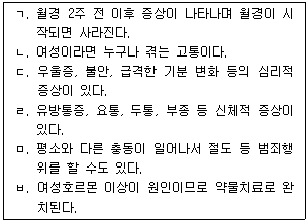
- ㄱ, ㄴ, ㄷ, ㄹ
- ㄱ, ㄴ, ㄷ, ㅂ
- ㄱ, ㄷ, ㄹ, ㅁ
- ㄱ, ㄷ, ㄹ, ㅁ, ㅂ
- ㄴ, ㄷ, ㄹ, ㅁ, ㅂ
(정답률: 알수없음)
53. 스토킹 피해시 대처법으로 옳지 않은 것은?
- 스토커의 일체 행동에 일관되게 무반응으로 대한다.
- 스토커의 감정을 상하게 하면 보복할 수 있으므로 공감하며 설득한다.
- 스토킹 피해를 주변에 알린다.
- 법적 대응에 대비해서 전화나 이메일 등을 녹음ㆍ기록하여 보관한다.
- 긴급시 도움을 청할 수 있는 전화번호를 알아둔다.
(정답률: 알수없음)
54. 성적 고정관념에 관한 설명으로 옳은 것은?
- 성별과 성적 고정관념이 일치할수록 적응적이다.
- 성적 고정관념으로 피해를 입는 것은 여자들이다.
- 사회학적 영향도 있지만 기본적으로 생물학적 차이를 반영한 것이다.
- 성이분법적 범주화 정보처리의 영향을 받는다.
- 여성은 성적 고정관념과 일치하지 않아야 사회적 성취가 가능하다.
(정답률: 알수없음)
55. 성과 관련된 역사적 사건의 영향에 관한 설명으로 옳은 것은?
- 1960년대 여성주의 등장으로 성적 고정관념이 타파됨.
- 1960년대 후반 성반응에 대한 과학적 연구 결과발표로 성기능장애 치료가 최초로 시도됨.
- 1960년대 경구피임약 시판으로 개방적 성태도가 확산됨.
- 1990년대 에이즈 공포 확산으로 무분별한 성행동이 사실상 사라짐.
- 20세기 후반 인터넷 보급으로 정확한 성정보 제공이 보장됨.
(정답률: 알수없음)
56. 성에 관한 각 분야, 이론의 설명으로 옳지 않은 것은?
- 생리학: 성해부학을 기초로 성의 생식기능에 주목한다.
- 정신분석학: 프로이트의 심리성적발달 이론에 기초하여 무의식의 영향을 강조한다.
- 행동주의: 성행동, 성태도 등을 학습 원리로 설명한다.
- 사회학: 성에 대한 사회ㆍ문화적 영향을 강조한다.
- 진화심리학: 종족보존 추구 원리를 기초로 남녀 유사성을 강조한다.
(정답률: 알수없음)
57. 청소년 성매매의 한 유형인 '원조교제'에 관한 설명으로 옳은 것을 모두 고른 것은?
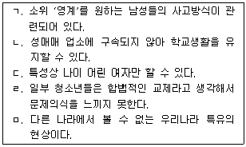
- ㄱ, ㄴ, ㄷ
- ㄱ, ㄴ, ㄹ
- ㄱ, ㄴ, ㄷ, ㄹ
- ㄴ, ㄷ, ㄹ, ㅁ
- ㄱ, ㄴ, ㄷ, ㄹ, ㅁ
(정답률: 알수없음)
58. 자신이 동성애자인지 혼란스러워 하는 청소년 상담의 개입으로 옳지 않은 것은?
- 동성애자인지도 모르겠다고 생각하는 근거가 되는 생활경험을 탐색한다.
- 이성교제 경험 부족으로 생긴 문제라고 설명하고, 다양한 이성교제 기회를 갖도록 돕는다.
- 성장과정을 돌아보며 성과 관련된 경험을 탐색한다.
- 성적지향은 객관적 검사로 판단할 수 없고, 결국 스스로 자기 경험을 탐색해야 한다는 것을 교육한다.
- 혼란스러움과 두려움을 표현하도록 도와서 불안을 경감시킨다.
(정답률: 알수없음)
59. 성폭력 가해자가 보이는 인지왜곡에 해당하는 것을 모두 고른 것은?
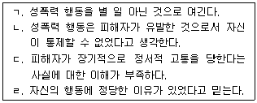
- ㄴ, ㄷ
- ㄴ, ㄹ
- ㄱ, ㄴ, ㄷ
- ㄱ, ㄴ, ㄹ
- ㄱ, ㄴ, ㄷ, ㄹ
(정답률: 알수없음)
60. 스턴버그(Sternberg)의 사랑의 삼각형 이론에 관한 설명으로 옳은 것은?
- 열정은 상대에게 밀착하려는 연대감을 말한다.
- 친밀감은 서로의 육체에 대한 끌림이나 스킨십과 관련된다.
- 낭만적 사랑은 열정만 있는 것으로 스킨십과 성적 쾌감이 강조된다.
- 공허한 사랑은 열정이 결여된 것으로 우정에 가깝다.
- 불완전한 사랑은 열정과 헌신, 두 요소가 결합된 사랑이다.
(정답률: 알수없음)
3과목: 약물상담
61. 중추신경억제제로 작용하는 약물만으로 묶인 것은?
- 코데인, 마리화나, 덱스드린
- 메사돈, 바비튜레이트, 디아제팜
- 덱스드린, 헤로인, 톨루엔
- 코카인, 메사돈, 마리화나
- 암페타민, 모르핀, 바비튜레이트
(정답률: 알수없음)
62. 약물중독자의 가족치료 기법으로서 다음 내용을 강조하고 있는 것은?
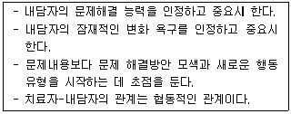
- 전략적 가족치료
- 구조적 가족치료
- 경험주의적 가족치료
- 보웬(Bowen)의 가족치료
- 해결중심 단기가족치료
(정답률: 알수없음)
63. 약물중독을 행동의 문제로 보고 새로운 대처기술과 인지적 전략을 습득하면 문제행동에 대한 통제와 관리가 가능하다고 주장하는 치료모델은?
- 사회문화모델
- 공중보건모델
- 의료모델
- 사회학습모델
- 도덕ㆍ의지모델
(정답률: 알수없음)
64. 치료 공동체(TC)에 관한 설명으로 옳은 것을 모두 고른 것은?
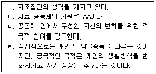
- ㄱ, ㄹ
- ㄴ, ㄷ
- ㄱ, ㄷ, ㄹ
- ㄴ, ㄷ, ㄹ
- ㄱ, ㄴ, ㄷ, ㄹ
(정답률: 알수없음)
65. 약물중독 재활에서 사례관리의 목적을 달성하기 위한 원칙으로 옳지 않은 것은?
- 사례관리 서비스의 책임은 한정적이며 일정 기간 동안 지속해야 한다.
- 개인의 장점과 욕구에 서비스 계획을 맞추어야 한다.
- 대상자가 가능한 한 독립적으로 기능하도록 격려해야 한다.
- 각 개인의 손상 정도에 따라 제공되는 서비스 수준이 달라야 한다.
- 개인 욕구의 변화에 따라 서비스 유형과 강도가 변해야 한다.
(정답률: 알수없음)
66. 다나(Dana)와 블레벤스(Blevens)가 약물남용자의 상담에 필요하다고 제시한 지침을 모두 고른 것은?
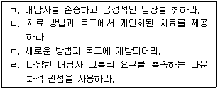
- ㄱ, ㄴ
- ㄱ, ㄴ, ㄷ
- ㄱ, ㄷ, ㄹ
- ㄴ, ㄷ, ㄹ
- ㄱ, ㄴ, ㄷ, ㄹ
(정답률: 알수없음)
67. 약물남용 치료서비스 중 내담자의 다음 조건에 적합한 치료는?
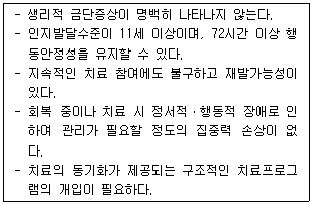
- 정신분석치료
- 집중적 외래치료
- 부분 입원치료
- 집중 입원치료
- 거주치료
(정답률: 알수없음)
68. 약물중독자의 상담초기 과정에서 다루어야 할 내용으로 옳지 않은 것은?
- 내담자의 신체적ㆍ심리적 문제에 대한 평가
- 절제와 치료를 위한 동기화
- 약물사용의 외적 요소와 내적 감정의 확인
- 약물 해독
- 절제와 치료계획 세우기
(정답률: 알수없음)
69. 이중진단을 가진 내담자를 치료하는 방법으로 다음의 특징을 가지는 치료모델은?
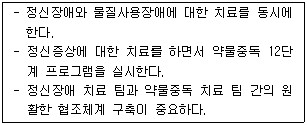
- 평행적 치료 모델
- 통합치료 모델
- 순차적 치료 모델
- 상호작용 모델
- 제 3요소 모델
(정답률: 알수없음)
70. 헤로인 금단증상이 아닌 것은?
- 체온 상승
- 혈압 상승
- 불면
- 호흡억제
- 통증과 신경질
(정답률: 알수없음)
71. 중독가족 상담에서 가족 개입의 주요 목표가 아닌 것은?
- 회복을 위한 동기 증진시키기
- 회복에 장애가 되는 가족 유형들을 변화시키기
- 가족 구성원들에 대한 장기적인 지지를 격려하기
- 가족 구성원들에게 변화 당위성 강조하기
- 초기 회복과정에서 예측되는 것들을 가족들에게 준비시키기
(정답률: 알수없음)
72. 환각제로 분류할 수 있는 약물을 모두 고른 것은?
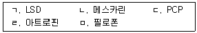
- ㄱ, ㄴ, ㄷ
- ㄱ, ㄴ, ㅁ
- ㄴ, ㄷ, ㄹ
- ㄷ, ㄹ, ㅁ
- ㄱ, ㄴ, ㄷ, ㄹ
(정답률: 알수없음)
73. 롤닉(Rollnick)의 동기강화상담에서 상담자가 갖추어야 할 태도로 옳지 않은 것은?
- 교정반사 삼가기
- 변화에 대해 설득하고 논쟁하기
- 내담자의 동기 이해해 주기
- 내담자의 이야기 경청하기
- 내담자에게 힘을 실어주기
(정답률: 알수없음)
74. 약물중독 상담에서 집단상담 대상자로 적합하지 않은 것은?
- 사회적 기술의 습득이 필요한 경우
- 타인과의 유대감, 소속감 및 협동심의 향상이 필요한 경우
- 타인들로부터 과도한 주목과 인정에 대한 욕구가 있는 경우
- 개인 감정표현이나 자기주장의 표현이 부족한 경우
- 동료나 타인의 이해와 지지가 필요한 경우
(정답률: 알수없음)
75. 학교기반 약물남용 예방프로그램인 약물남용 자각 및 저항 프로그램(DARE)에 관한 설명으로 옳지 않은 것은?
- 약물사용의 엄격한 금지에 바탕을 두고 있다.
- 약물작용에 대한 정보를 제공한다.
- 약물사용을 거절하고 친구의 압력에 저항할 수 있는 기술을 함양시킨다.
- 마약 사용에 연루되는 것을 피할 수 있는 기술을 가르친다.
- 교사가 프로그램을 진행하므로 학생과의 상호작용이 용이하다.
(정답률: 알수없음)
76. 브라운(Brown)의 알코올중독 분류 유형 중에서 생활 스트레스를 풀기 위해 마시며, 금단증상 및 조절력 상실은 없고 갈망 등이 나타나는 유형은?
- 사회형
- 심리적 의존형
- 유지형
- 진행형
- 감각추구형
(정답률: 알수없음)
77. 다음은 프로차스카(Prochaska)와 디클레멘트(DiClemente)가 제시한 변화단계 중 어느 단계에 해당하는가?
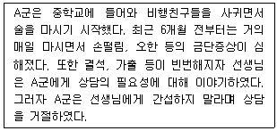
- 전숙고단계
- 숙고단계
- 준비단계
- 실행단계
- 유지단계
(정답률: 알수없음)
78. 약물사용 가능성이 높은 청소년의 특성이 아닌 것은?
- 부모나 친구로부터 평소와 다르게 자주 돈을 빌린다.
- 부모와 자주 대화를 나누고 안정된 애착관계를 형성한다.
- 부모가 알코올중독으로 오랜 기간 치료를 받아 오고 있다.
- 평소보다 참을성이 없어지고 화를 내는 일이 빈번하다.
- 수업시간에 집중을 못하고 안절부절하며 눈을 잘 마주치지 못한다.
(정답률: 알수없음)
79. 청소년 약물사용의 특징에 관한 설명으로 옳은 것은?
- 호기심이나 모험심에서 약물을 사용하는 경우 단기간에 중독된다.
- 환각제는 술과 담배 등의 약물사용으로 이어지는 관문약물이다.
- 혼자 사용하는 것보다 여럿이 함께 약물을 사용하는 경우가 많다.
- 성인에 비해 중독으로 진행하는 속도가 느리다.
- 성인에 비해 조장자가 적다.
(정답률: 알수없음)
80. 담배갑 경고문구에 관련된 법률에 관한 설명으로 옳은 것을 모두 고른 것은?
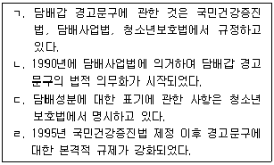
- ㄱ, ㄹ
- ㄴ, ㄷ
- ㄱ, ㄴ, ㄹ
- ㄴ, ㄷ, ㄹ
- ㄱ, ㄴ, ㄷ, ㄹ
(정답률: 알수없음)
81. 약물관련 개념에 관한 설명으로 옳지 않은 것은?
- 약물오용은 약물의 사용목적에 맞으나 양, 횟수, 방법 등의 규정에 따르지 않고 사용하는 것이다.
- 내성은 동일한 효과를 얻기 위해 약물 사용량을 줄이는 것이다.
- 신체적 의존이란 약물을 중단하였을 때 금단증상이 나타나는 상태를 말한다.
- 재발은 약물중독으로부터 회복된 이후에 병의 증상이 다시 나타나는 것을 말한다.
- 강박적 사용은 약물로 인한 문제 및 부작용이 나타남에도 불구하고 약물을 지속적으로 사용하는 것이다.
(정답률: 알수없음)
82. 다음의 특징을 보이는 청소년은 존슨(Johnson)의 약물중독 단계 중 어느 단계에 해당하는가?
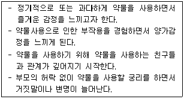
- 감정전이 경험단계
- 감정전이 진행단계
- 감정전이 추구단계
- 파괴적인 감정전이 돌입단계
- 파괴적인 감정의존단계
(정답률: 알수없음)
83. 강성약물이 아닌 것은?
- 모르핀
- 코카인
- 메스카린
- 헤로인
- 카페인
(정답률: 알수없음)
84. 다음 사례는 알코올중독 가정의 자녀 유형 중 어느 유형에 속하는가?
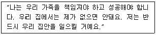
- 희생양
- 잊혀진 아이
- 공모자
- 귀염둥이
- 가족영웅
(정답률: 알수없음)
85. 다음은 무엇에 관한 설명인가?
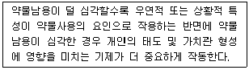
- 선택적 상호작용이론
- 상황 일치모델
- 사회적 능력모델
- 사회통제이론
- 합리적 선택이론
(정답률: 알수없음)
86. 청소년 음주예방 정책 중 주류에 대한 접근성 감소정책에 해당하는 것을 모두 고른 것은?
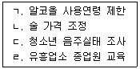
- ㄱ, ㄴ
- ㄴ, ㄷ
- ㄱ, ㄴ, ㄹ
- ㄴ, ㄷ, ㄹ
- ㄱ, ㄴ, ㄷ, ㄹ
(정답률: 알수없음)
87. 약물남용의 원인에 관한 이론적 설명으로 옳지 않은 것은?
- 유전이론은 개인의 유전적 요인이 약물남용에 영향을 미친다고 본다.
- 인성이론은 충동성, 공격성 등이 약물남용에 영향을 미친다고 본다.
- 사회학습이론은 약물사용에 대한 보상 및 처벌이 약물남용에 영향을 미친다고 본다.
- 사회통제이론은 관습적 사회에 대한 애착이 높을수록 약물남용할 가능성이 높다고 본다.
- 하위문화이론은 약물사용에 우호적인 특정 사회집단에 속할수록 약물남용할 가능성이 높다고 본다.
(정답률: 알수없음)
88. 청소년 약물남용 예방에 관한 설명으로 옳지 않은 것은?
- 1차 예방은 약물남용 증상이 나타나기 전에 문제행동을 표적으로 삼는다.
- 1차 예방은 약물문제가 발생하기 전인 유ㆍ아동기부터 실시하는 것이 바람직하다.
- 2차 예방의 예로 홍보, 조사, 약물폐해에 관한 교육 등이 있다.
- 2차 예방은 고위험군을 대상으로 약물로 인한 위험한 결과를 최소화하는 데 있다.
- 3차 예방은 약물남용에 대한 치료, 재활 및 재발예방을 목표로 한다.
(정답률: 알수없음)
89. 청소년 약물남용에 영향을 미치는 사회학적 요인으로 나열된 것은?
- 과도한 도파민 분비, 공격성
- 제사 등의 가족행사, 알코올중독 가족력
- 아동기 품행장애, 학교주변의 술집
- 주변의 약물권유, 친구의 약물사용
- 비행친구, 구강기 고착
(정답률: 알수없음)
90. 약물남용 선별에 관한 설명으로 옳지 않은 것은?
- 약물남용의 잠재적 사례를 찾아내고 추가사정의 필요성을 확인하게 해준다.
- 약물남용의 유무 확인뿐만 아니라 내담자와의 라포 형성도 중요하다.
- 선별도구로 진단을 내린다.
- POSIT는 청소년 대상 약물남용 선별도구이다.
- 보건소, 학교 상담실 등 내담자를 1차적으로 접촉할 수 있는 기관에서 실시할 수 있다.
(정답률: 알수없음)
4과목: 위기상담
91. 급성 스트레스 장애 진단을 위한 기준이 아닌 것은?
- 3개월 이상 증상의 지속
- 현실과 유리된 느낌
- 회피적 행동
- 플래시백
- 이인증
(정답률: 알수없음)
92. 위기반응에 관한 설명으로 옳지 않은 것은?
- 위기의 원인이 되는 사건에 대한 반응이다.
- 개인이 가진 대처 기제로 해결하지 못하면 심한 정서적 고통을 경험한다.
- 사건에 대한 해석이 위기반응에 영향을 주지 않는다.
- 신체적, 정서적, 행동적으로 위기반응을 보인다.
- 위기 상황에 대한 반응은 개인마다 다르다.
(정답률: 알수없음)
93. 다음은 영(Young)이 제시한 인터넷 중독의 유형 중 어느 유형에 속하는가?
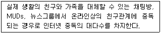
- 사이버 섹스 중독(Cyber-sexual addiction)
- 사이버 관계 중독(Cyber-relationship addiction)
- 인터넷 강박증(Net compulsions)
- 정보 중독(Information overload)
- 컴퓨터 중독(Computer addiction)
(정답률: 알수없음)
94. 위기 아동ㆍ청소년 부모의 특징으로 옳은 것을 모두 고른 것은?
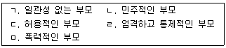
- ㄱ, ㄴ, ㄷ
- ㄱ, ㄴ, ㄹ
- ㄱ, ㄴ, ㅁ
- ㄱ, ㄷ, ㄹ
- ㄱ, ㄷ, ㄹ, ㅁ
(정답률: 알수없음)
95. 대인관계이론에 관한 설명으로 옳지 않은 것은?
- 개인의 자아체계는 타인의 반사적 평가에 기초하며, 심리적 장애는 부정적인 대인관계 문제의 결과로 본다.
- 인간의 성격을 사회적 관계망의 산물로 본다.
- 위기를 극복하기 위해 개인의 새로운 행동의 습득과 적응을 강조한다.
- 자신에 대한 자긍심과 타인에 대한 신뢰는 위기상황을 극복하는 데 중요하다.
- 상담에서 상담자는 내담자와의 직접적인 커뮤니케이션을 활용한다.
(정답률: 알수없음)
96. 다음은 어떤 유형의 위기에 해당하는가?
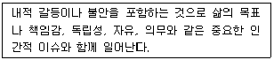
- 발달적 위기
- 상황적 위기
- 실존적 위기
- 환경적 위기
- 사회문화적 위기
(정답률: 알수없음)
97. 위기평가에 관한 설명으로 옳지 않은 것은?
- 내담자의 정서 상태를 평가한다.
- 내담자의 행동 상태를 평가한다.
- 내담자의 인지 상태를 평가한다.
- 내담자의 지원체계를 평가한다.
- 내담자의 성격구조를 평가한다.
(정답률: 알수없음)
98. 위기상담의 원리로 옳지 않은 것은?
- 신속하게 개입한다.
- 제한된 목표를 설정한다.
- 문제해결에 초점을 둔다.
- 위기사건에 영향을 준 무의식을 탐색한다.
- 희망과 기대를 고취시킨다.
(정답률: 알수없음)
99. 청소년 위기 개입의 기본 목표가 아닌 것은?
- 취약한 감정에 효과적으로 대처하도록 감정의 억제를 돕는다.
- 청소년과 가족의 행동, 사고, 감정이 그 상황에서 부적절한 것이 아니라는 인식을 하게 한다.
- 청소년과 부모가 위기 상황을 재평가하고 그들의 지각을 전환하여 있는 그대로의 상황을 보도록 돕는다.
- 청소년과 그의 가족이 위기 상황에 대한 반응을 정상화하도록 돕는다.
- 청소년과 가족이 더 적응적인 문제해결 전략을 개발하도록 돕는다.
(정답률: 알수없음)
100. 위기에 따른 단계적 반응을 순서대로 옳게 나열한 것은?
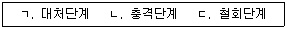
- ㄱ → ㄴ → ㄷ
- ㄱ → ㄷ → ㄴ
- ㄴ → ㄱ → ㄷ
- ㄴ → ㄷ → ㄱ
- ㄷ → ㄱ → ㄴ
(정답률: 알수없음)
101. 청소년 위기개입의 단계를 순서대로 옳게 나열한 것은?
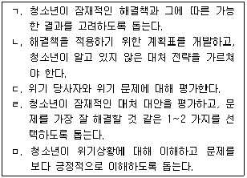
- ㄱ → ㄴ → ㄷ → ㄹ → ㅁ
- ㄱ → ㄴ → ㅁ → ㄷ → ㄹ
- ㄷ → ㅁ → ㄱ → ㄴ → ㄹ
- ㄷ → ㅁ → ㄱ → ㄹ → ㄴ
- ㅁ → ㄷ → ㄱ → ㄴ → ㄹ
(정답률: 알수없음)
102. 청소년 위기상담에 관한 설명으로 옳은 것을 모두 고른 것은?
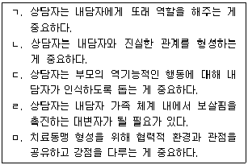
- ㄱ, ㄴ
- ㄴ, ㄹ, ㅁ
- ㄷ, ㄹ, ㅁ
- ㄱ, ㄴ, ㄹ, ㅁ
- ㄱ, ㄴ, ㄷ, ㄹ
(정답률: 알수없음)
103. 심리적 외상에 관한 설명으로 옳지 않은 것은?
- 시간이 지나면 외상 기억은 자연스럽게 치유된다.
- 외상의 경험으로 인해 한 개인의 신념이 극단적으로 변할 수 있다.
- 가정폭력을 목격한 아동의 경우 정상적인 발달이 멈추거나 방해를 받을 수 있다.
- 외상의 기억이 통합되지 않고 이전 스키마와 독립적인 실체로 발전된다.
- 살인 목격이나 자연재해에의 노출로도 외상의 증상이 나타날 수 있다.
(정답률: 알수없음)
104. 학교폭력 위기상담의 특징에 관한 설명으로 옳지 않은 것은?
- 피해자 및 가해자 청소년, 그의 부모들이 포함되기 때문에 매우 복잡한 양상을 띤다.
- 피해자와 가해자간의 법률문제가 발생하게 되므로 법률자문체계를 갖추고 있어야 한다.
- 학교폭력 상담에서 상담자의 중재기술이 중요하다.
- 상담자는 우선 생명이나 안전의 보장을 위해 최선의 노력을 해야 한다.
- 상담자는 최우선적으로 가해자가 폭력을 행사한 원인에 대해 파악을 해야 한다.
(정답률: 알수없음)
1⑤. 위기에 처한 청소년의 스트레스 반응으로 옳지 않은 것은?
- 당황
- 혼란
- 절망
- 무기력
- 경조증
(정답률: 알수없음)
106. 다음은 무엇에 관한 설명인가?
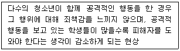
- 모델효과
- 책임분산효과
- 희생자에 대한 인식변화 효과
- 대중매체효과
- 집단주의 문화 효과
(정답률: 알수없음)
107. 학교폭력 현상의 특징으로 옳지 않은 것은?
- 다양하고 복잡한 양상을 보인다.
- 정도의 심각성이 커지고 있다.
- 일반화된 비행유형이 나타나고 있다.
- 가해자와 피해자의 구분이 용이하다.
- 원인을 찾기 어렵고 피해 사실을 감춘다.
(정답률: 알수없음)
108. 청소년 자살의 특징으로 옳은 것은?
- 성인에 비해 정신질환에 의한 자살이 적다.
- 대부분 사전 계획에 의해 시도된다.
- 스트레스 대응능력 부족 및 인지적 미숙이 주요인이기 때문에 충동적 자살률은 낮다.
- 자살의도가 자살행동으로 나타날 가능성이 낮다.
- 자살행동은 대부분 죽으려는 의지에 따른 것이다.
(정답률: 알수없음)
109. 학교폭력에 관한 설명으로 옳지 않은 것은?
- 가해자는 공격성을 통해 목표를 성취할 수 있다고 생각한다.
- 가해자는 타인에 대한 공감능력이 낮다.
- 피해자는 사회적 기술이 부족하다.
- 피해자의 어머니는 자녀를 또래보다 더 어리게 대한다.
- 가해행동은 교사의 무관심과 관련성이 없다.
(정답률: 알수없음)
110. 자살의 미디어 보도에 관한 보건복지부 권고사항으로 옳지 않은 것은?
- 자살을 영웅적 행위나 낭만적 해결책처럼 포장하기를 피하라
- 자살률에 대한 최근의 경향을 넣지 말아라
- 작은 사실에 근거하여 일반화하거나 자살의 원인 단순화하기를 피하라
- 새로운 자살 방법을 소개하고 세세하게 설명하기를 피하라
- 자살한 사람의 사진넣기를 피하라
(정답률: 알수없음)
111. 자살 사고를 가진 청소년 상담에 관한 설명으로 옳지 않은 것은?
- 자신과 타협하는 방법을 배움으로써 이상적 자아수준을 높이도록 해야 한다.
- 부정적 경험을 지양하고 긍정적 경험을 통해 자아존중감을 높이도록 해야 한다.
- 민감성 제거 훈련을 실시해야 한다.
- 과거와 현재를 돌아보는 시간을 가지게 함으로써 결국 현재에 초점을 맞추는 훈련을 시켜야 한다.
- 죽음에 대한 감상적 관념을 없애도록 도와야 한다.
(정답률: 알수없음)
112. 라이트(Wright)의 이혼단계에서 부부가 서로의 문제를 더 이상 함께 대처할 수 없을 때 함께 있는 것이 더 큰 문제라고 인식하는 단계는?
- 부정 단계
- 상실과 우울 단계
- 분노와 양가성 단계
- 생활 스타일과 정체성의 재확립 단계
- 수용과 새로운 수준의 기능 성취 단계
(정답률: 알수없음)
113. 자살 위기 개입단계에서 필요한 상담 지침으로 옳지 않은 것은?
- 자살하려는 청소년이 표현하는 감정에 귀를 기울이며 이를 존중한다는 것을 보여준다.
- 치명성을 명확히 평가한다. 특히 계획의 구체성을 파악하는 것이 중요하다.
- 몇 시간내로 자살을 할 것이라고 암시하는 청소년들은 입원을 시켜야 하며 부모에게 알려야 한다.
- 서면계약이 구두계약보다 효과적이기 때문에 강제적이라도 서면계약을 해야 한다.
- 지역사회 정신보건기관 및 사설 상담기관들을 비롯해 이용할 수 있는 자원을 모두 이용해야 한다.
(정답률: 알수없음)
114. 학교폭력과 관련된 신경전달물질에 관한 다음 설명에서 ( )안에 들어갈 물질을 순서대로 옳게 나열한 것은?
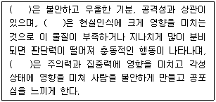
- 세로토닌, 도파민, 노르에피네프린
- 세로토닌, 노르에피네프린, 도파민
- 도파민, 세로토닌, 노르에피네프린
- 도파민, 노르에피네프린, 세로토닌
- 노르에피네프린, 도파민, 세로토닌
(정답률: 알수없음)
115. 파벨로우(Farbelow)의 전화 자살위기개입의 단계로 옳은 것은?
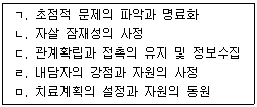
- ㄱ → ㄷ → ㄴ → ㄹ → ㅁ
- ㄱ → ㄷ → ㄴ → ㅁ → ㄹ
- ㄴ → ㄷ → ㄱ → ㅁ → ㄹ
- ㄷ → ㄱ → ㄴ → ㄹ → ㅁ
- ㄷ → ㄴ → ㄱ → ㅁ → ㄹ
(정답률: 알수없음)
116. 이혼가정 청소년의 심리적ㆍ정서적 위기를 극복하기 위한 과제로 옳지 않은 것은?
- 부모의 이혼을 현실적인 것으로 받아들일 수 있도록 해야 한다.
- 가족은 상호작용 체계이므로 자녀를 부모의 갈등에서 분리시키지 말고 정상적인 학교생활 및 친구관계를 유지하도록 도와야 한다.
- 이혼 후 자녀는 자기비난이나 부모에 대한 분노를 해결해야 한다.
- 이혼이 불가변한 것이라고 인식할 수 있도록 돕는다.
- 자신과 관련된 미래에 대해 현실적인 희망을 성취할 수 있도록 해 주어야 한다.
(정답률: 알수없음)
117. 다음에서 설명하고 있는 위기개입 기법은?
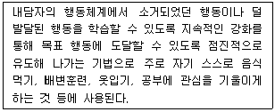
- 부적강화(negative reinforcement)
- 조형(shaping)
- 모델링(modeling)
- 행동시연(behavior rehearsal)
- 고취(prompting)
(정답률: 알수없음)
118. 시프네오스(Sifneos)의 단기불안야기치료를 위한 내담자의 조건으로 옳지 않은 것은?
- 내담자의 지능수준은 적어도 평균 이상이어야 한다.
- 내담자는 확인할 만한 문제를 가지고 있어야 한다.
- 내담자는 문제해결이 아닌 정서와 감정을 표현하는 데 관심을 두어야 한다.
- 내담자는 적어도 하나의 의미 있는 사건을 가지고 있어야 한다.
- 내담자는 현실적인 목표를 설정해야 한다.
(정답률: 알수없음)
119. 위기개입 상담시 질문의 지침으로 옳지 않은 것은?
- 정보를 요청하라
- 계획에 초점을 두어라
- 참여 약속을 받아내라
- 부정의문문을 피하라
- '왜'라는 질문을 사용해라
(정답률: 알수없음)
120. 길리랜드(Gilliland)의 위기개입 6단계는 크게 경청(listening)과 활동(acting)으로 구분된다. 다음 중 활동의 영역을 모두 고른 것은?
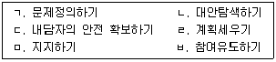
- ㄱ, ㄴ, ㅁ
- ㄱ, ㄷ, ㅁ
- ㄴ, ㄷ, ㅁ
- ㄴ, ㄹ, ㅂ
- ㄷ, ㄹ, ㅂ
(정답률: 알수없음)